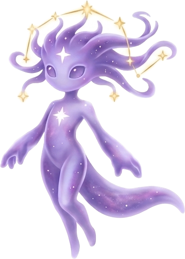
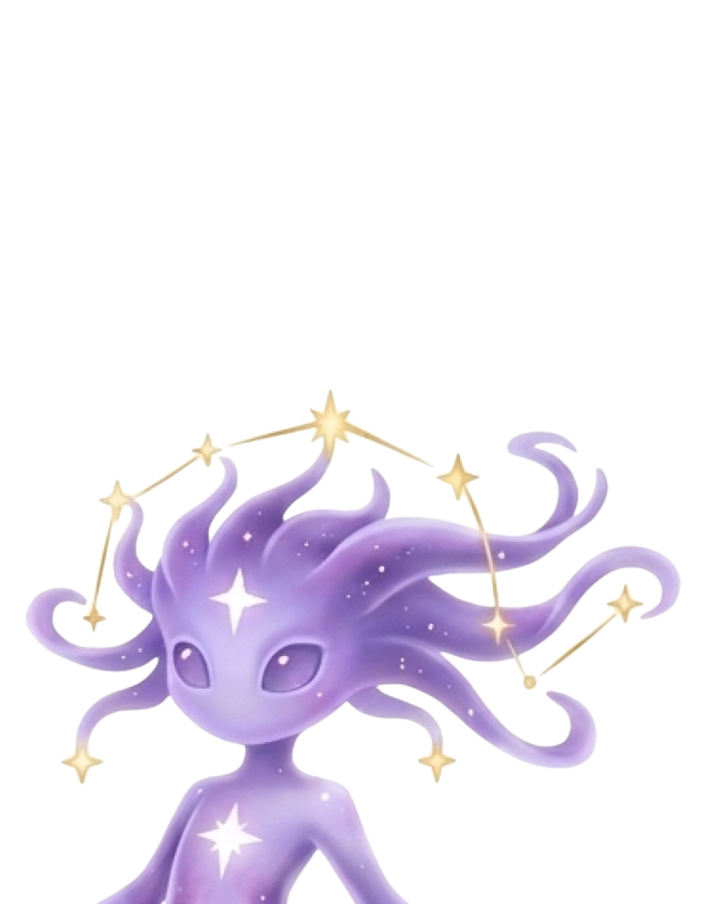
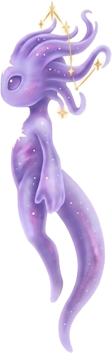
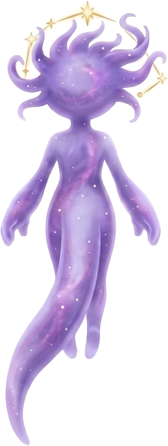
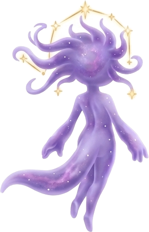

Un lugar para respirar cuando el día se pone cuesta arriba.
Aura te da herramientas concretas para los momentos difíciles —respiración, anclaje, un diario que solo tú puedes abrir— y, si tienes terapeuta, le muestra tu evolución en números sin que nadie lea una sola palabra de lo que escribes.
Gratuita. Funciona sin señal. Sin anuncios y sin vender datos.

Cinco cosas que puedes hacer hoy mismo
Nada de teoría. Cada módulo existe porque resuelve un momento específico: la noche que no cierra los ojos, la crisis que sube en el camión, el día que no encuentras las palabras.
Diario que solo abres tú
Escribes, y el texto se cifra en tu teléfono con AES-256 usando tu PIN de cuatro dígitos. Ni nosotros ni tu terapeuta podemos leerlo. Si olvidas el PIN, tampoco tú: es el precio de que sea de verdad privado.
aurorIA, para las 3 de la mañana
Una conversación breve cuando no hay a quién escribirle. Recuerda el hilo de la sesión, no diagnostica, y cuando la cosa se pone seria te pasa con una persona en vez de seguir hablando.
Habilidades TIPP
Agua muy fría en el rostro, activación física, respiración pausada y relajación muscular. Protocolos de regulación que bajan la activación en minutos, explicados sin tecnicismos.
Meditación 9 a 0
Conteo regresivo anclado a la exhalación, pensado para cortar la rumiación nocturna. Es la herramienta a la que la gente vuelve cuando el insomnio se instala.
Kit sensorial, lienzo y burbujas
Cuando no hay palabras: ejercicios de los cinco sentidos para volver al cuerpo, un lienzo para dibujar sin objetivo, burbujas para reventar. Descarga táctil, sin puntaje ni rachas.
Botón SOS, siempre a la vista
En la barra inferior, en todas las pantallas. Abre enfriamiento térmico, respiración de choque 4-2-8, la línea de apoyo 24/7 y el WhatsApp de tu terapeuta. Tres toques, sin buscar nada.
Aura no es un servicio médico ni de emergencias. No sustituye la atención de un profesional de salud mental. Si estás en peligro inmediato, marca 911. En México, la Línea de la Vida atiende gratis las 24 horas al 800 911 2000.

Ella es aurorIA
Una criatura estelar que vive en la app y responde cuando no hay nadie a quién escribirle. Recuerda el hilo de la conversación, habla corto, y cuando algo se pone serio no intenta resolverlo sola: te pasa con una persona.
aurorIA no diagnostica, no habla de medicamentos y te dice que es una IA si se lo preguntas. La detección de riesgo no depende de ella: corre en tu teléfono, sin internet, antes de que nada salga a la red.



Tu terapeuta ve la curva. Nunca el texto.
Es la decisión de arquitectura que sostiene todo lo demás: los conteos se calculan en tu teléfono y lo único que sube a la nube son números. No es una política que prometemos cumplir — es que el texto no tiene por dónde salir.
Nadie puede leerlo
- Las entradas del diario: se cifran en tu teléfono y se guardan ya cifradas
- Tu PIN, que nunca se transmite ni se guarda en ningún servidor
- Sin ese PIN el diario es ilegible — para tu terapeuta, para nosotros y para ti
Sube al expediente
- Tu ánimo diario, como número del 1 al 5
- Cuántas veces usaste respiración o TIPP
- Cuántas veces mencionaste términos como «ansiedad»
- Cuándo activaste el botón SOS
Tu cuenta también guarda tus conversaciones con aurorIA, en un área privada que solo tú puedes abrir. Tu terapeuta no entra ahí.
Si activas aurorIA con modelo en la nube, lo que escribes en ese chat sí viaja a Google para generar la respuesta. Te lo decimos en la pantalla de ajustes, viene apagado, y con el interruptor apagado aurorIA responde con guiones locales y sigue funcionando sin señal.
Llegar a sesión sabiendo cómo estuvo la semana
Das de alta tu cédula, generas un código como AUR-K7QF29 y se lo pasas a tu paciente. Desde ese momento su evolución llega a tu panel sola, y tú sigues siendo quien interpreta.
Expediente que se llena solo
Curva y promedio de ánimo de 14 a 30 días, índice de estabilidad y fluctuación, frecuencia de términos clínicos verbalizados, adherencia a respiración y TIPP, e historial de activaciones del SOS. Se actualiza en el momento, no cuando el paciente se acuerda de contarlo.
Aviso cuando hubo un episodio
Si tu paciente activa el SOS, te llega una alerta. No para que intervengas en el momento —Aura no es un servicio de urgencias— sino para que la próxima sesión no empiece a ciegas.
Notas de evolución privadas
Tu espacio para escribir después de cada sesión. Las notas son tuyas: el paciente no las ve desde la app, y viven separadas de las métricas.
Tu perfil en el directorio
Una vez verificada tu cédula ante el Registro Nacional de Profesionistas, apareces en el catálogo de la app con tu especialidad, modalidad y contacto directo por WhatsApp.
Instálala y ábrela hoy en la noche
Funciona en Android y también directo desde el navegador: entra, toca «Agregar a pantalla de inicio» y queda instalada sin pasar por ninguna tienda.